ボックスチャート
ボックスチャート
概要
このチュートリアルでは、次のボックス図をデータプロットと分布曲線の両方で作成する方法をご案内します。
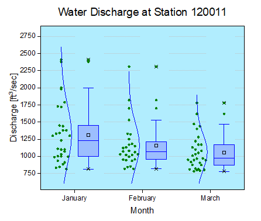
必要なOriginのバージョン: Origin 2015 SR0以降
学習する項目
このチュートリアルでは、以下の項目について解説します。
- データを重ね合わせたボックスチャートを作成する
- ボックスチャートを編集する
- レイヤ背景を変更する
ステップ
このチュートリアルは、チュートリアルデータプロジェクト（<Origin EXE Folder>\Samples\Tutorial Data.opj）と関連しています。
- Tutorial Data.opj を開き、プロジェクトエクスプローラでBox Plot フォルダを開きます。
- ワークシートBoxDataをアクティブにし、列January(Y)、February(Y)、March(Y)を選択します。メニューから作図：統計：ボックスを選択します。
- プロットをクリックして、ミニツールバーを開きます。ボックスの種類ボタンをクリックして、リストから点列[左}+ボックス[右]を選択します。
- 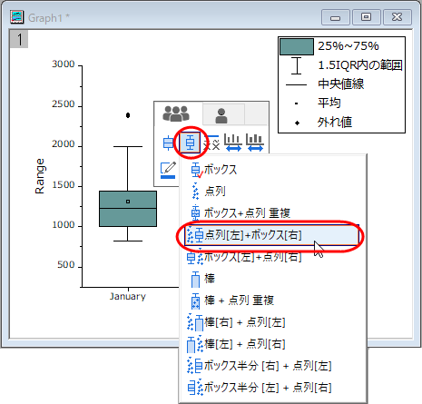
- ミニツールバーの境界色ボタンをクリックして青を選択します。
- 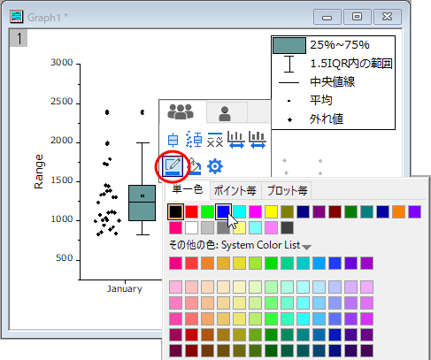
- 塗り色ボタンをクリックして下図のようにしてカスタムカラーを作成します。
- 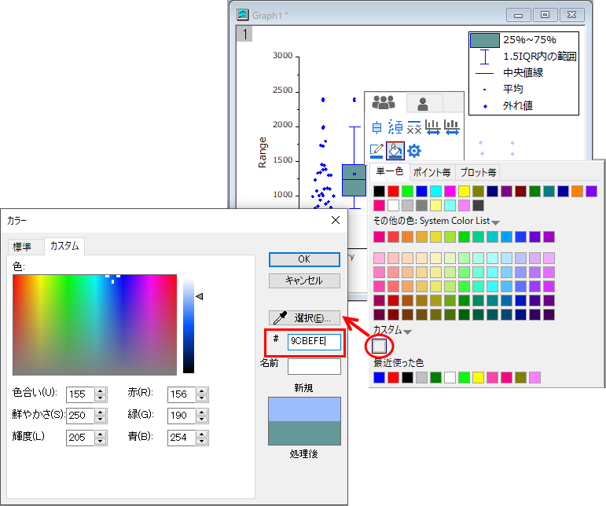
- ボックスをダブルクリックして、作図の詳細（プロット属性）ダイアログを開きます。点列が追加されたので、ダイアログ内にデータタブが追加されます。このタブで、分布曲線を作成し、ビン化オプションを変更するために、下図のように編集します。
- 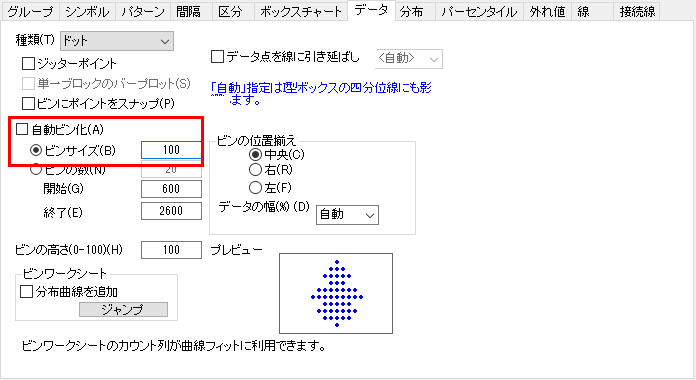
- その後、分布タブで正規曲線を作成します。
- 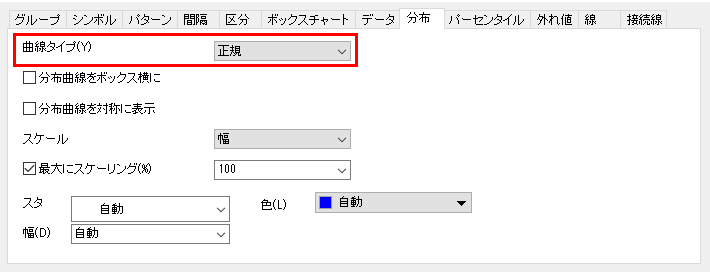
- 次の操作では、シンボルタブでデータシンボルの編集を行います。
- 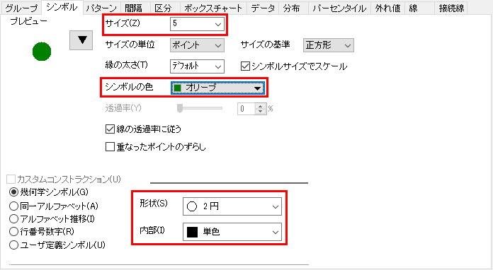
- パーセンタイルポイントの編集はパーセンタイルタブで行います。
- 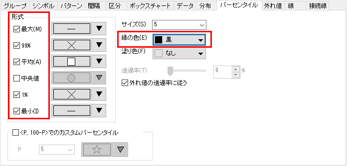
- 背景色を編集します。作図の詳細ダイアログの左パネルで、Layer1を選択してレイヤレベルをアクティブにします。もし、左パネルが表示されていない場合、
 ボタンをクリックしてダイアログを拡張します。背景 タブで、色 オプションをクリックして、色 ダイアログのカスタム にある、空の色ボックスをクリックします。カスタム タブのダイアログで、赤、緑 と 青 の値を入力して、色を指定します。ここでは、(R:177, G:237, B:254)の値にて、色を作成しました。 OK をクリックして設定を適用し、ダイアログボックスを閉じます。
ボタンをクリックしてダイアログを拡張します。背景 タブで、色 オプションをクリックして、色 ダイアログのカスタム にある、空の色ボックスをクリックします。カスタム タブのダイアログで、赤、緑 と 青 の値を入力して、色を指定します。ここでは、(R:177, G:237, B:254)の値にて、色を作成しました。 OK をクリックして設定を適用し、ダイアログボックスを閉じます。
- Y 軸上でクリックし、ミニツールバーの軸スケールボタンをクリックします。軸スケール - Y 軸ダイアログで、下図のように軸スケールを設定します。
- 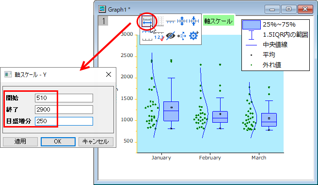
- 左軸のタイトルをダブルクリックして、タイトルをDischarge [ft\+(3)/sec] にします。
- 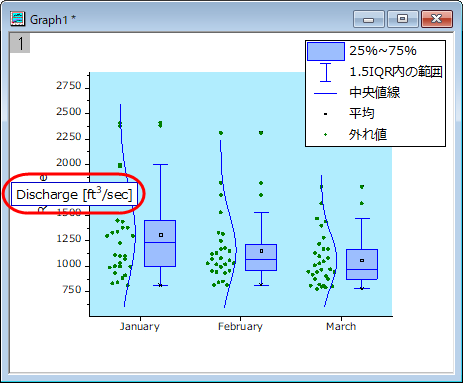
- Y 軸上でクリックし、ミニツールバーの軸ダイアログボタンをクリックして、グリッド線...を選択します。ダイアログで、主グリッド線を有効にして、下図のようにスタイルを設定してOKボタンをクリックします。
- 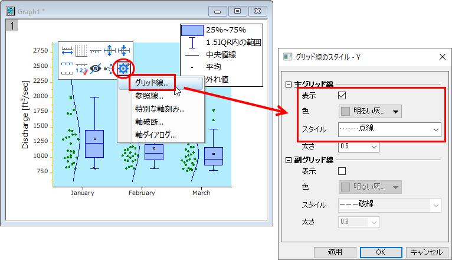
- X軸をダブルクリックして、軸ダイアログボックスを開きます。タイトルタブで、表示にチェックをつけてからX軸のタイトルをMonthに変更します。
- 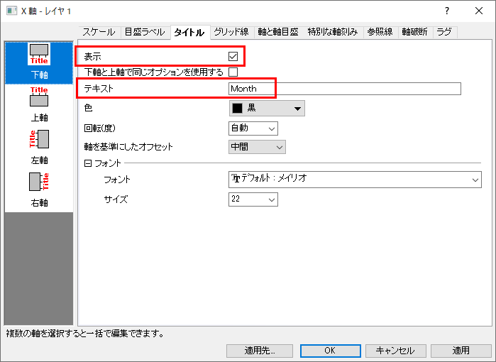
- スケールタブを開き、左パネルで垂直方向を選択して、副目盛のカウントを0に設定します。
OK をクリックして設定を適用し、ダイアログボックスを閉じます。
- 表示：表示様式：レイヤ枠と選択して枠を表示します。
- 凡例をクリックし、Deleteキーを押すと削除可能です。
- レイヤを右クリックし、表示されたメニューからレイヤタイトルを追加/変更をクリックします。テキストボックスに Water Discharge at Station 120011 を入力します。レイヤタイトルや軸タイトル上でダブルクリックすると、テキストの編集が可能です。